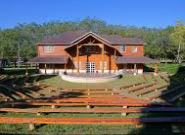

Attractions周邊景點

金龍山晨曦 1 KM
攝影聖地金龍山攝影界朋友們口耳相傳的晨昏攝影三大聖地：「北格頭、中五城、南二寮」，是低海拔拍日出雲海的「夢幻級秘境」，春夏的夜裡常常會襲上一簾薄霧或是縈繞著雲海，通常雲霧由右邊的日月潭往左席捲而來，便形成著名的琉璃夜與晨曦曙光。本民宿距離此處非常便利並提供導覽服務

日月潭水社碼頭 7.4 KM
位於台灣南投縣魚池鄉日月村，為日潭與月潭之合稱，因其雙潭水色各異而得名。是台灣第二大湖泊，也是台灣著名的國家風景區壯麗、薄暮的潭水或者天五色斑爛的晚霞滿天，早晨黃昏都有各自不同的美貌
詳情
九族文化村 6.4 KM
九族文化村位於魚池鄉大林村是一處結合觀光、遊憩、文化及教育的多元化旅遊點。
詳情

廖鄉長紅茶故事館 1.3 KM
廖鄉長紅茶故事館，最特別的是建築外型採用歐風的設計，而裏面卻是保留了懷舊的製茶工廠跟現代的銷售中心，在這邊可是有不少好茶，最棒的就是可以坐下來免費品茗紅茶、花果茶，還有提供小點心喔！
詳情


三育基督教學院 3.5 KM
三育基督學院位在南投縣魚池鄉，是一間基督教學校，主張以基督教教育教育學生。 走在校園內，廣大的校園擁有無盡的草皮，還以為是個超自然的公園 。